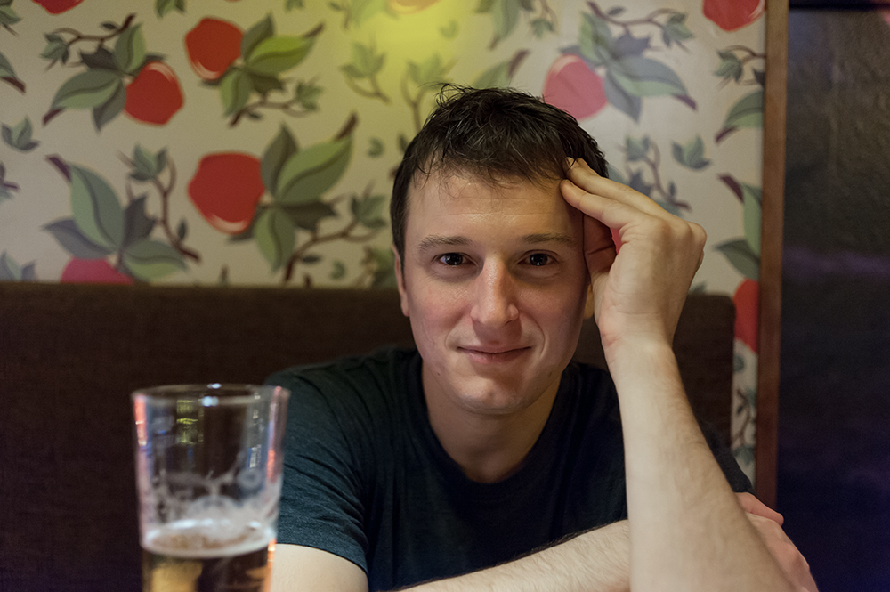

|
|
|
|
Louis DeBiasio |
|
Office:
Upham
305A |
 |
Professor of Mathematics Department of
Mathematics |
|
Teaching
Other 2020-2023 NSF DMS Grant 2013-2018 Simons Collaboration Grant 2012 Project NExT fellow MIGHTY LIV at Miami University -- April 6, 2013 |
Research 40) A bounded diameter strengthening of Kőnig's theorem, submitted (with António Girão, Penny Haxell, and Maya Stein) 39) A note on the multicolor size-Ramsey numbers of connected graphs, submitted 38) On the multicolor Ramsey numbers of balanced double stars, submitted (with Deepak Bal and Ella Oren-Dahan) 37) A lower bound on the multicolor size-Ramsey numbers of paths in hypergraphs, to appear in European Journal of Combinatorics (with Deepak Bal and Allan Lo) 36) Large monochromatic components in expansive hypergraphs, to appear in Combinatorics, Probability, and Computing (with Deepak Bal) 35) Large monochromatic components in hypergraphs with large minimum codegree, Journal of Graph Theory 105, no.3 (2024), 367-372. (with Deepak Bal) 34) Unavoidable structures in infinite tournaments, to appear in Proceedings of the American Mathematical Society (with Alistair Benford and Paul Larson) 33) Powers of Hamiltonian cycles in multipartite graphs, Discrete Mathematics 345, no. 4, April 2022, 112747. (with Ryan Martin and Theo Molla) 32) Covering 2-colored complete digraphs by monochromatic d-dominating digraphs, Journal of Graph Theory 100, no. 4 (2022), 721-726. (with András Gyárfás) 31) Generalizations and strengthenings of Ryser's conjecture, Electronic Journal of Combinatorics 28, no. 4 (2021), P4.37. (with Yigal Kamel, Grace McCourt, and Hannah Sheats) 30) Density of monochromatic infinite subgraphs II, submitted (with Jan Corsten and Paul McKenney) 29) A note about monochromatic components in graphs of large minimum degree, Discussiones Mathematicae Graph Theory 43, no. 3 (2023), 607-618. (with Robert A. Krueger) 28) New lower bounds on the size-Ramsey number of a path, Electronic Journal of Combinatorics 29, no. 1 (2022), P1.18. (with Deepak Bal) 27) Ramsey numbers of path-matchings, covering designs and 1-cores, Journal of Combinatorial Theory, Series B 146, (2021), 124-140. (with András Gyárfás and Gábor N. Sárközy) 26) Large monochromatic components in 3-edge-colored Steiner triple systems, Journal of Combinatorial Designs 28, no. 6 (2020), 428-444. (with Michael Tait) 25) On Hamiltonian cycles in balanced k-partite graphs, Discrete Mathematics 344, no. 11 (2021), 112583. (with Nicholas Spanier) 24) Transitive tournament tilings in oriented graphs with large minimum total degree, SIAM Journal on Discrete Mathematics 35, no. 1, 250-266. (with Allan Lo, Theodore Molla, and Andrew Treglown) 23) Upper density of monochromatic infinite paths, Advances in Combinatorics, 2019:4, 16pp. (with Jan Corsten, Ander Lamaison, and Richard Lang) 22) Large monochromatic components in multicolored bipartite graphs, Journal of Graph Theory 94, no. 1 (2020), 117-130. (with Robert A. Krueger and Gábor N. Sárközy) 21) Long monochromatic paths and cycles in 2-colored bipartite graphs, Discrete Mathematics 343, no. 8 (2020), 111907. (with Robert A. Krueger) 20) Partitioning edge-coloured complete symmetric digraphs into monochromatic complete subgraphs, Discrete Mathematics 341, no. 11 (2018), 3134-3140.(with Carl Bürger, Hannah Guggiari, and Max Pitz) 19) Monochromatic balanced components, matchings, and paths in multicolored complete bipartite graphs, Journal of Combinatorics 11, no. 1 (2020), 35-45. (with András Gyárfás, Robert A. Krueger, Miklós Ruszinkó, and Gábor N. Sárközy). 18) Spanning trees with few branch vertices, SIAM Journal on Discrete Mathematics 33, no. 3 (2019), 1503-1520. (with Allan Lo). 17) Large monochromatic components and long monochromatic cycles in random hypergraphs, European Journal of Combinatorics 76, (2019), 123-137. (with Patrick Bennett, Andrzej Dudek, and Sean English) 16) Hamiltonian cycles in k-partite graphs, Journal of Graph Theory 94, no. 1 (2020), 92-112. (with Robert A. Krueger, Dan Pritikin, and Eli Thompson) 15) Density of monochromatic infinite subgraphs, Combinatorica 39, no. 4 (2019), 847-878 (with Paul McKenney) 14) Tiling directed graphs with tournaments, Forum of Mathematics, Sigma (2018), Vol. 6, e2, 53 pages (with Andrzej Czygrinow, Theodore Molla, and Andrew Treglown) 13) Partitioning random graphs into monochromatic components, Electronic Journal of Combinatorics 24, no. 1 (2017), P1.18. (with Deepak Bal) 12) Monochromatic cycle partitions of graphs with large minimum degree, Journal of Combinatorial Theory, Series B 122 (2017), 634-667. (with Luke Nelsen) 11) Arbitrary orientations of Hamilton cycles in digraphs, SIAM Journal on Discrete Mathematics 29, no. 3 (2015), 1553-1584. (with Daniela Kühn, Theodore Molla, Deryk Osthus, and Amelia Taylor) 10) Ore-degree threshold for the square of a Hamiltonian cycle, Discrete Mathematics and Theoretical Computer Science 17, no. 1 (2015), 13-32. (with Safi Faizullah and Imdadullah Khan) 9) Improved degree conditions for 2-factors with k cycles in Hamiltonian graphs, Discrete Mathematics 320 (2014), 51-54. (with Mike Ferrara and Tim Morris) 8) An extension of the Hajnal-Szemerédi theorem to directed graphs, Combinatorics, Probability, and Computing 24, no. 5 (2015), 754-773. (with Andrzej Czygrinow, H.A. Kierstead, and Theodore Molla) 7) Semi-degree threshold for anti-directed Hamiltonian cycles, Electronic Journal of Combinatorics 22, no. 4 (2015), P4.34. (with Theodore Molla) 6) On the co-degree threshold for the Fano plane, European Journal of Combinatorics 36, (2014), 151-158. (with Tao Jiang) 5) Tiling 3-uniform hypergraphs with \(K_4^3-2e\), Journal of Graph Theory 75, no. 2 (2014), 124-136. (with Andrzej Czygrinow and Brendan Nagle) 4) Tiling in bipartite graphs with asymmetric minimum degrees, (with Andrzej Czygrinow) 3) A note on bipartite graph tiling, SIAM Journal on Discrete Mathematics 25, no. 4 (2011), 1477-1489. (with Andrzej Czygrinow) 2) Posa's conjecture for graphs of order at least \(2\times 10^8\), Random Structures and Algorithms 39, no. 4 (2011), 507-525. (with Phong Chau and H.A. Kierstead) 1) 2-Factors of bipartite graphs with asymmetric minimum degrees, SIAM Journal on Discrete Mathematics 24, no. 2 (2010), 486-504. (with Andrzej Czygrinow and H.A. Kierstead) 0) Optimal degree conditions for spanning subgraphs, Ph.D. Thesis, Arizona State University |
Image © Kelsey Vance